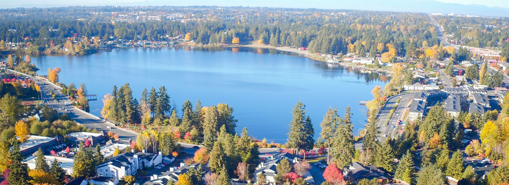
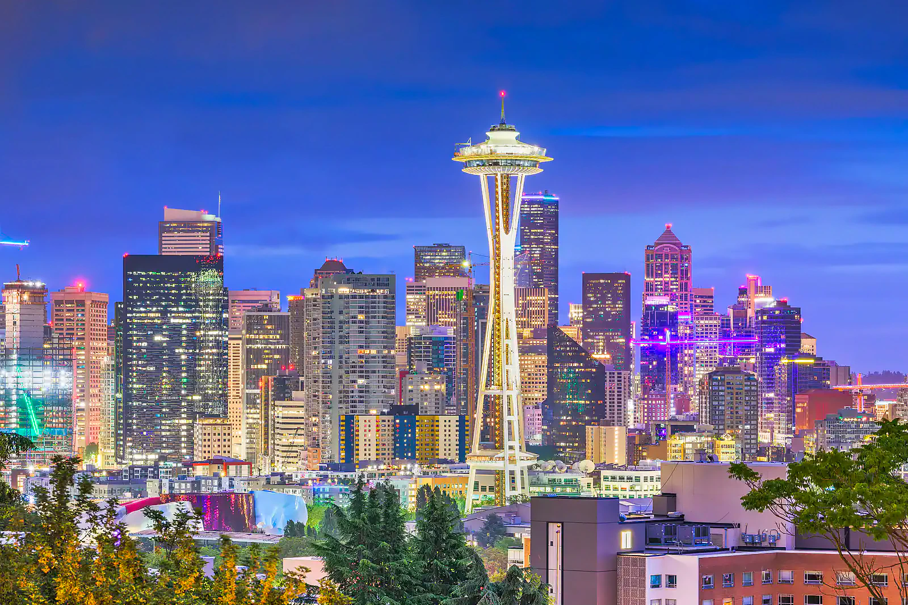

Explore Washington's Vibrant Cities
Discover the unique charm and attractions of Washington's cities. Each city has its own character, offering a mix of culture, entertainment, and natural beauty.
-
Seattle
-
Olympia
Experience the beauty of Bellevue with its modern skyline, beautiful parks, and cultural attractions. This city offers a perfect blend of urban and natural surroundings.

-
Everett
Discover Everett, a city with a rich history and a variety of outdoor activities. From naval history to waterfront adventures, Everett has something for everyone.

Explore the Emerald City, known for its iconic Space Needle, vibrant neighborhoods, and stunning waterfront. Seattle is a hub of innovation and culture.
